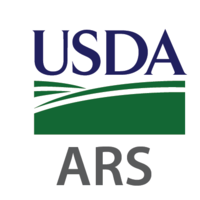
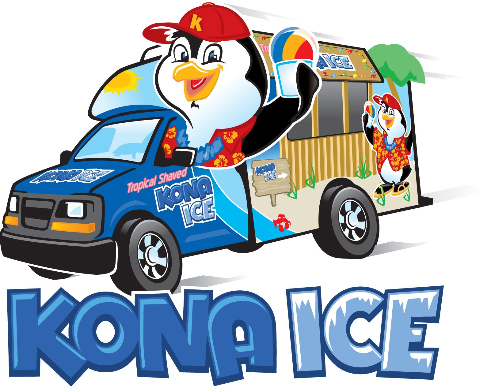

Experience
|  | During my summers in high school I worked at the USDA Agricultural Research Center where I was a biological research aid. Some of my daily tasks involved interpreting aerial photography of farmland, designing cap models using 3D CAD software, as well as utilizing and monitering 3D printing technology. |  | I have also worked for Kona Ice where I learned customer service. Some of my tasks involved responding and providing information to customers, calculating payments, assisting in inventory restocking and money mangement, as well as maintaining equipment in addition to vehicle property. |